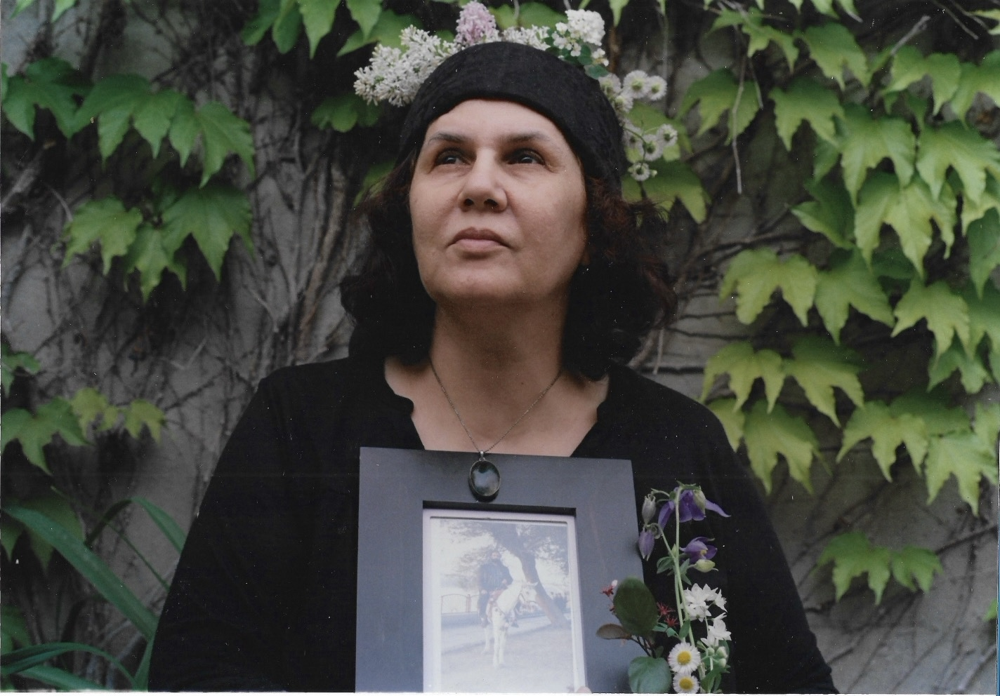

Work

CLICK TO EXPLORE
Mixed Media · 2024
An exploration of analogue photography and enlargment using organic leaves, pods, flowers, and darkroom masks.
Method
Analogue 35mm. Hand-enlarged darkroom print.
1 / 14
Hanāseh
Analogue • 2024